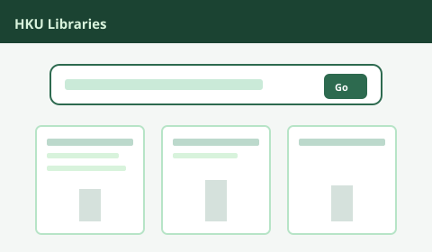

學習：少一點內耗
當一週更可預期，滿意度往往更高。下面的習慣強調效率：少反覆重讀，筆記更清楚，時間估計更誠實。

可擴展的習慣
兩個每週錨點
- 每週複盤（30–45 分鐘）：掃一遍每門課的截止日與閱讀。
- 「下一步行動」筆記：每次學習結束前寫一句：下一個具體動作是什麼。
專注時段
嘗試 25–50 分鐘計時塊：手機遠離、單任務。休息時段起身飲水短走，避免「同螢幕假休息」。
主動回想勝過劃亮螢光筆
合上書，根據小標題自己出題。考試獎勵的是提取練習，不是黃色高亮的舒適區。
功課多在 Moodle 完成
港大 Moodle 是大學以 Moodle 為基礎的線上學習平台（頁面標題常見「hkumoodle」）。每門課通常有獨立空間：資料、截止日、作業或報告上載、線上測驗，以及討論或小組任務。繁忙週期間，查看各課 Moodle 的頻率建議不低於查看電郵。